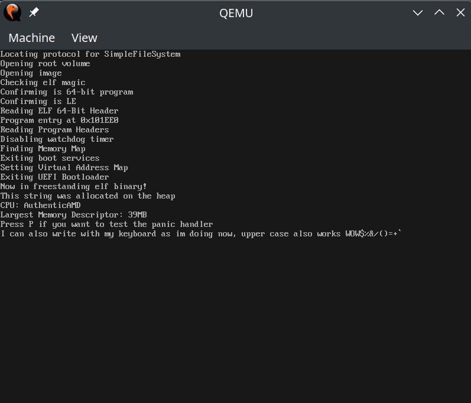
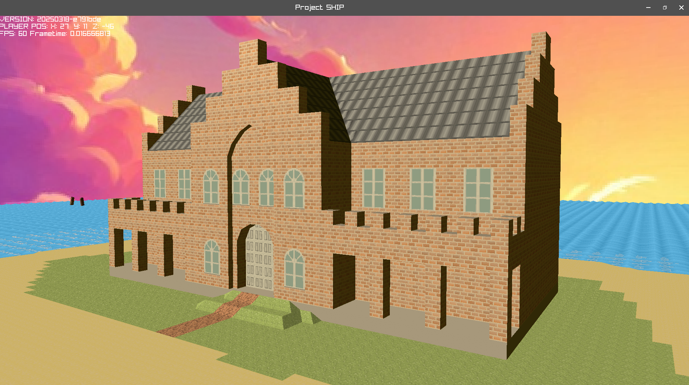

While this is far from finished, it is a working concept.
Zig is honestly amazing here, UEFI bindings are already in the standard library and makes it super easy to make UEFI applications.
Come decently far on this little hobby project, UART is in place, the screen buffer can be written too, a PSF font renderer can put glyphs to the screen, you can now allocate memory (Nothing fancy, just a linear allocator for now), Keyboard inputs are being handled ,made some steps into reading PCI devices. Actually going quite well
Things I still want to figure out: Right now, this is all running in real time, and as cool as real time operating systems are, interrupts are the shit so in the future set up IRQ's and make all the code threadsafe
After getting PCI up and running, find all the USB hubs and start learning about reading USB inputs and outputs
Also, filesystem! Learn how FAT filesystem work and implement how do find and read and write to disks
A distant dream if my interest lasts that long, is to setup userspace and kernel space, syscalls, loading programs
Here you can see the output from running it in a VM:
In a brilliant move that no software developer has ever done before, I decided I was too cool for P5.js and Javascript.
The result was learning how to make a game in Zig + Raylib, the end result didn't exactly end in a game but the foundations are there
Learned a lot during the making of this tech demo, if you could even call it that.
Especially enjoyed the process of making a SceneManager, a ConVar system with a working console, overwriting default malloc in C by injecting header files and exporting a Arena allocator from Zig to be used in C code.
Most variables are taken from the convar system as seen here:
Learning to make 3D Models in Crocotile 3D was also pretty happy about Resource manager concept, like the embedding of model files at compile time into the binary.
Since Zig is by default statically compiled, it resulted in a single binary with all the game files and everything, pretty neat.
I was honestly hoping to take this even further, to parse the .glb and shaders at compile time, but limitations with Raylib and Zig unable to run C code at comptime stopped me.
Part of me wants to revisit this, but create a game engine from scratch with SDL3, I think that will be fun.
Example of reading convars from console:
Raylib + Zig, Models and Textures made with Crocotile
After watching a bit too many youtube videos about system architecture and instruction sets and some of their problems, I got a brilliant idea^tm
A current source of security problems and optimization problems for current architectures is the branch predictor, so a idea I had is what if made the branch predictor, completely unnessesary?
How, how could this be done? Well, since conditional jumps are the source problem, just remove them and replace them with conditional arithmatic!
That means removing jnz and replacing it with a jmp command, and then calculate the jmp address with conditional arithmatic instead
Something like incnz, (increment if not zero), addz (add if zero), xorz and all variations of these
Like this, you would never need to flush a pipelined CPU because there is no need for a branch predictor (I think)
If somehow someone who knows about System architectures sees this, I would love to know if this would actually be viable
So far I have written a assembler that takes a file and assembles it into machine code that is then emulated
Works pretty well! Well, for the few instructions I have actually implemented
Some additional thoughts about the CPU design, it doesn't really have named registers, however instead has a 8-Bit addressable range of registers, giving it 2Kb worth of cache but at the same time being registers. I also thought of a special addressing mode where the address instead turns into a mask, so you can use one instruction on multiple registers, though for this mode, the least amount of registers you can address is 32. I think if this was to be a thing, then each register should also have its own ALU, but then... isn't this just some sort of bad GPU at that point?
I would like to get into the MMU design as well for this CPU, but for that I need to read about what it does first :)
If I ever get brave enough, buy a PLA dev kit and try to make a running version using real hardware, that would be amazing. Included in that would be implementing a LLVM target so I can use a real programming language instead of writing things in assembly.
Here you can see a example assembly code, as you can see there are no conditional jumps here:
Then it goes through the assembler and is immediately emulated:
And then you get the resulting output:
Very simple stuff really, but still pretty pleased with that!
Got a little annoyed when trying to find a good library to extract Zip archives for use with Zig.
Pretty much all of them had a annoying build system or something annoying that turned me off.
So instead I ended up making my own simple Zip Archive Extractor in Zig.
Was actually a very easy thing to do, since the Zip Archive Standard is very simplistic and Zig already built in decompression and compression algorithms
Writing a electron app to take pictures with cameras of labels uses OCR to recognize the labels and match partnumber and serialnumbers from order
C# CLI Tool that detects for USB insertion, grabs a zip archive and extracts a specific logfile, reading the contents and checking for failures
A Rust CLI tool for getting the latest builds and flashing them to USB sticks for software installation
A Node webserver for product planning, counting and display of different products. This webserver also does takt time and alerts when workers are supposed to have breaks. This project also included some ESP32's and some push buttons to make a control box for those who prefer physical buttons instead of a web interface to increment the count.
Also tried my hands on creating some video games, by far the most complete one is ShipGirlGame(Not the final name that's for sure). It's basically a attempt at making a turn based strategy game and this was the basic concept. I've yet to really have any creative ideas to expand on this game
SB is a single header style library for C for string manipulation and is what I used to build a basic reminder application
Zed is a text editor I started on recently to explore Zig more. It now has the bare minimum required for a file editor, it can open and save files as well as arrow navigation.
We have a insentive program at my current workplace to improve certain things, and we pick winners every month that receive some type of reward at the end. This was a way to pick the winner. You can try it out here
I have taken the Zig pill, and honestly I dont really want to program in anything else anymore, it is so nice after you get over the speed bumps in the beginning. The only thing I still dislike about Zig is that it is intentially making you be very explicit in what you do, which is both a blessing and a curse. On my Github I have a few clones of coreutils like cat to practise using these languages. C is really fun langugage to write code in, but can be annoying sometimes whenever it comes to memory allocation and working with strings, and to solve the latter I made a SB as mentioned above